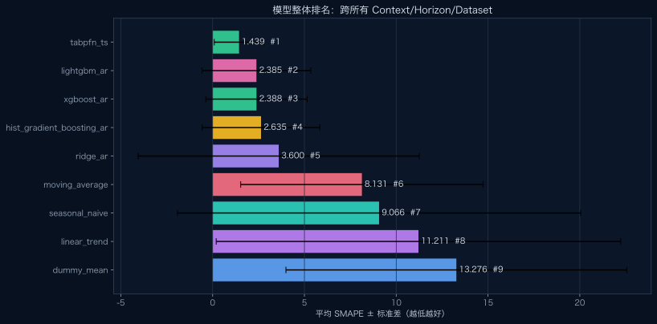
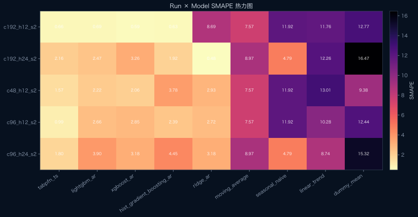
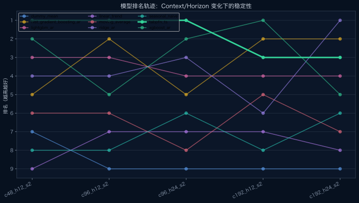
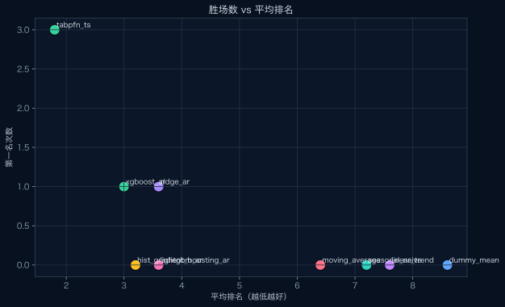
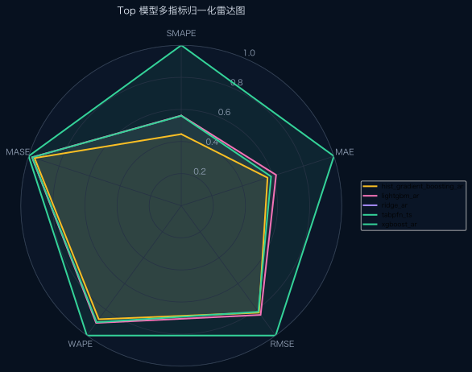

std 1.350 · wins 3 · gap +0.000
模型放在一起对比
把 9 个模型放到同一个视角里比较：整体平均 SMAPE、每个 context/horizon 的热力图、排名轨迹、胜场数和多指标雷达图。所有数字来自真实 forecast_metrics.csv。
单 run 报告：c48_h12_s2c96_h12_s2c96_h24_s2c192_h12_s2c192_h24_s2
std 2.960 · wins 0 · gap +0.946
std 2.761 · wins 1 · gap +0.949
std 3.203 · wins 0 · gap +1.196
std 7.659 · wins 1 · gap +2.161
std 6.603 · wins 0 · gap +6.692
std 10.988 · wins 0 · gap +7.627
std 11.017 · wins 0 · gap +9.772
std 9.283 · wins 0 · gap +11.837
整体排名

Run × Model 热力图

排名轨迹

胜场数 vs 平均排名

Top 模型雷达图

模型汇总表
| Model | Overall Rank | Mean SMAPE | Std | Avg Rank | Wins |
|---|---|---|---|---|---|
| tabpfn_ts | #1 | 1.4389 | 1.3502 | 1.80 | 3 |
| lightgbm_ar | #2 | 2.3852 | 2.9600 | 3.60 | 0 |
| xgboost_ar | #3 | 2.3881 | 2.7610 | 3.00 | 1 |
| hist_gradient_boosting_ar | #4 | 2.6354 | 3.2031 | 3.20 | 0 |
| ridge_ar | #5 | 3.5997 | 7.6588 | 3.60 | 1 |
| moving_average | #6 | 8.1313 | 6.6034 | 6.40 | 0 |
| seasonal_naive | #7 | 9.0656 | 10.9884 | 7.20 | 0 |
| linear_trend | #8 | 11.2109 | 11.0169 | 7.60 | 0 |
| dummy_mean | #9 | 13.2761 | 9.2832 | 8.60 | 0 |